미국 브랜드 1,017
미국에서 시작한 브랜드 1017개를 로고와 함께 모았습니다. 대표적인 미국 브랜드로는 페이스북(Facebook), 유튜브(YouTube), 구글(Google), X, 마이크로소프트(Microsoft), 인스타그램(Instagram) 등이 있습니다. 수록 기준은 검수된 브랜드 설명이나 공식 웹사이트가 일치하는 위키데이터 개체에서 기원 국가가 확인된 경우로 한정했습니다.
다른 국가 보기
국가별 전체 →산업별로는 미디어·엔터테인먼트 164개, 에너지·산업재 162개, 기술·전자 161개, 금융 109개 순입니다. 설립연도가 확인된 브랜드는 983개이며 가장 오래된 곳은 1800년, 가장 최근은 2025년에 시작했습니다. 시기별로는 1900년 이전 118개, 1900~1949년 195개, 1950~1999년 471개, 2000년 이후 199개입니다. 수록 자료로는 로고 이미지 990개, 로고 변천 자료 49개, 연혁 타임라인 56개를 갖췄습니다. 이 가운데 934개는 공식 웹사이트가 일치하는 위키데이터 개체로 연결해 두었습니다.
산업별 미국 브랜드
미국 에너지·산업재 브랜드 162
미국 기술·전자 브랜드 161
미국 금융 브랜드 109
미국 식음료 브랜드 105
미국 헬스·제약 브랜드 67
미국 모빌리티 브랜드 53
미국 브랜드 목록
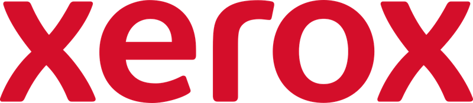
제록스XEROX미국 · 1906년제록스(Xerox)는 1906년 미국에서 창립해 제로그래피 기반 복사기로 사무 문서 산업을 개척한 문서장비 기업이다.
시스코 시스템즈(Cisco Systems)는 라우터·스위치 등 네트워킹 장비와 사이버보안·협업 솔루션을 개발하는 미국의 IT 기업이다.
 말보로Marlboro미국 · 1924년
말보로Marlboro미국 · 1924년말보로(Marlboro)는 필립 모리스가 1924년 도입한 미국의 담배 브랜드이다.
어그UGG미국 · 1978년UGG(어그)는 미국 데커스 브랜즈 산하의 양가죽 부츠로 유명한 신발 브랜드이다.
 어도비Adobe미국 · 1982년
어도비Adobe미국 · 1982년어도비(Adobe)는 1982년 설립된 미국의 소프트웨어 기업으로, 포토샵(Photoshop)을 비롯한 크리에이티브 제작 도구와 구독형…
 뉴발란스New Balance미국 · 1906년
뉴발란스New Balance미국 · 1906년뉴발란스(New Balance)는 미국 보스턴에 기반을 둔 비상장 운동화·스포츠 의류 기업이다.
 페덱스FedEx미국 · 1971년
페덱스FedEx미국 · 1971년페덱스(FedEx)는 미국 멤피스에 본사를 둔 글로벌 특송·물류 기업이다.
 오픈AIOpenAI미국 · 2015년
오픈AIOpenAI미국 · 2015년OpenAI는 미국의 인공지능 연구·개발 기업으로, 대화형 AI 서비스 ChatGPT를 비롯한 생성형 AI 제품으로 널리 알려져 있다.
버드와이저(Budweiser)는 아돌푸스 부시가 1876년 출시한 미국의 아메리칸 라거 맥주 브랜드이다.
 써브웨이Subway미국 · 1965년
써브웨이Subway미국 · 1965년써브웨이(Subway)는 1965년 미국에서 시작된 서브마린 샌드위치 프랜차이즈이다.
 던킨Dunkin'미국 · 1950년
던킨Dunkin'미국 · 1950년던킨(Dunkin')은 1950년 미국 매사추세츠주 퀀시에서 문을 연 커피·도넛 체인으로, 창업자 윌리엄 로젠버그가 1948년 시작한 '오픈…
 토리 버치Tory Burch미국 · 2004년
토리 버치Tory Burch미국 · 2004년토리 버치(Tory Burch)는 2004년 디자이너 토리 버치가 설립한 미국 패션 브랜드이다.
 팬아메리칸 월드 항공Pan Am미국 · 1927년
팬아메리칸 월드 항공Pan Am미국 · 1927년팬암(Pan American World Airways)은 1927년부터 1991년까지 운항한 미국의 항공사로, 한때 미국의 비공식 국적기로…
노스페이스(The North Face)는 1966년 미국에서 창립한 VF 코퍼레이션 산하의 아웃도어 의류·장비 브랜드이다.
 에스티 로더ESTÉE LAUDER미국 · 1946년
에스티 로더ESTÉE LAUDER미국 · 1946년에스티 로더(Estée Lauder)는 1946년 미국에서 창립된 프레스티지 화장품 브랜드이자 글로벌 뷰티 그룹이다.
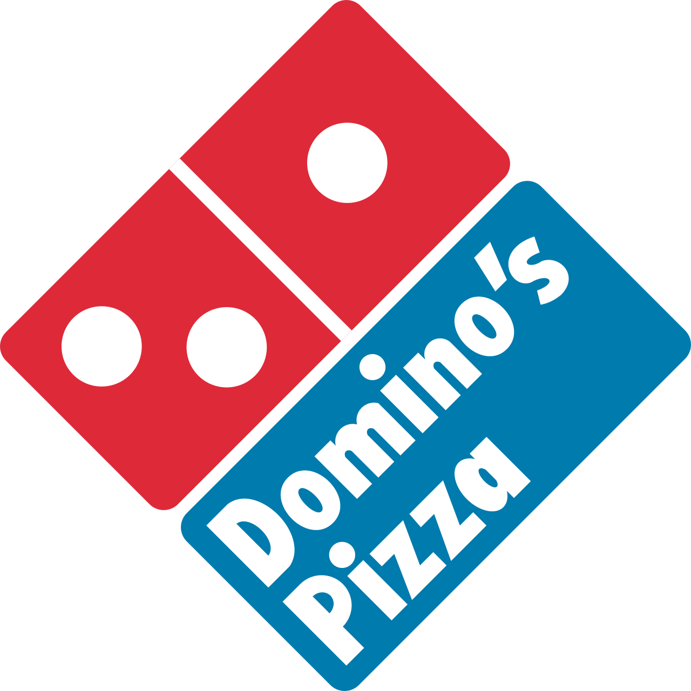
도미노피자Domino's Pizza미국 · 1960년도미노피자(Domino's Pizza)는 1960년 미국에서 시작된 글로벌 피자 배달·테이크아웃 프랜차이즈이다.
 양키캔들Yankee Candle미국 · 1969년
양키캔들Yankee Candle미국 · 1969년양키캔들(Yankee Candle)은 1969년 미국에서 시작된 향초 제조·소매 브랜드이다.
 페이팔Paypal미국 · 1998년
페이팔Paypal미국 · 1998년페이팔은 1998년 미국에서 출발해 온라인 송금과 결제를 대중화한 핀테크 기업으로, 이베이 거래의 표준 결제 수단으로 성장한 뒤 독립 상장해…
 켈로그KELLOGG’s미국 · 1906년
켈로그KELLOGG’s미국 · 1906년켈로그(Kellogg's)는 윌 키스 켈로그가 1906년 설립한 미국의 아침식사 시리얼 브랜드이다.
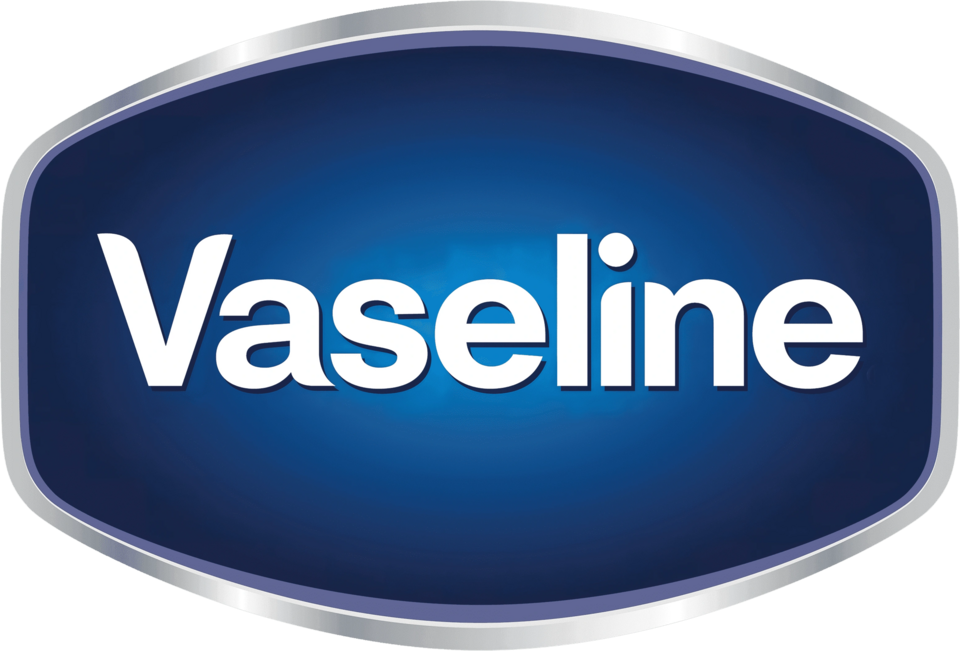
바세린Vaseline미국 · 1872년바세린(Vaseline)은 페트롤리움 젤리를 기반으로 한 미국의 스킨케어 브랜드이다.
 피자헛Pizza Hut미국 · 1958년
피자헛Pizza Hut미국 · 1958년피자헛(Pizza Hut)은 1958년 미국 캔자스에서 창립된 세계 최대 규모의 피자 프랜차이즈 브랜드이다.
 하인즈Heinz미국 · 1869년
하인즈Heinz미국 · 1869년하인즈(Heinz)는 1869년 헨리 J.
 이스턴 항공Eastern Airlines미국 · 1926년
이스턴 항공Eastern Airlines미국 · 1926년이스턴 항공(Eastern Air Lines)은 1991년까지 운항한 미국의 항공사다.
인텔은 보이지 않는 부품을 소비자가 인식하는 브랜드로 만든 대표적 사례다.
 헌팅턴 뱅크Huntington Bank미국 · 1866년
헌팅턴 뱅크Huntington Bank미국 · 1866년헌팅턴 뱅크(The Huntington National Bank)는 미국 오하이오주 컬럼버스에 본사를 둔 지역 은행으로, 1866년 설립되어…
 그라자Graza미국 · 2022년
그라자Graza미국 · 2022년그라자(Graza)는 미국의 D2C 올리브오일 브랜드로, 2022년 1월 출시 이후 밝은 녹색의 짜는 스퀴즈 보틀과 단일산지 스페인…
 트립어드바이저Tripadvisor미국 · 2000년
트립어드바이저Tripadvisor미국 · 2000년트립어드바이저(Tripadvisor)는 전 세계 여행자가 직접 남긴 후기를 모아 숙소·음식점·관광지·체험을 비교하고 예약하도록 돕는 미국의…
 피어스페이스Peerspace미국
피어스페이스Peerspace미국피어스페이스는 미국에서 출발한 시간 단위 공간 대여 마켓플레이스로, 이벤트·회의·촬영·파티 등 목적에 맞는 독특한 공간을 시간당 단위로 예약할…
 랄프 로렌Ralph Lauren미국 · 1967년
랄프 로렌Ralph Lauren미국 · 1967년랄프 로렌(Ralph Lauren)은 1967년 미국에서 설립된 럭셔리 라이프스타일·패션 브랜드이다.
 더 하트퍼드The Hartford미국 · 1810년
더 하트퍼드The Hartford미국 · 1810년더 하트퍼드는 1810년 미국 코네티컷주 하트퍼드에서 설립된 미국의 대표적 보험·금융 기업이다.
 비자Visa미국 · 1958년
비자Visa미국 · 1958년비자는 전 세계 카드 결제를 중계하는 미국의 결제 네트워크 기업이다.
 웨스팅하우스 일렉트릭Westinghouse미국 · 1886년
웨스팅하우스 일렉트릭Westinghouse미국 · 1886년웨스팅하우스 일렉트릭은 1886년 조지 웨스팅하우스가 설립한 미국의 전기·산업 제조 기업으로, 본사는 펜실베이니아주 피츠버그에 두었다.
 코인베이스Coinbase미국 · 2012년
코인베이스Coinbase미국 · 2012년코인베이스(Coinbase)는 2012년 미국 샌프란시스코에서 설립된 암호화폐 거래 플랫폼으로, 비트코인을 비롯한 디지털 자산을 일반 사용자가…
 오리진스ORIGINS미국 · 1990년
오리진스ORIGINS미국 · 1990년오리진스(Origins)는 에스티로더가 1990년 출범시킨 미국의 자연주의 스킨케어 브랜드이다.
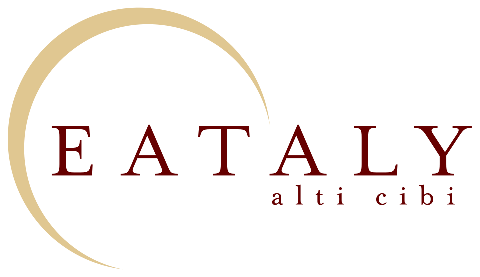
이탈리Eataly미국 · 2004년이탈리(Eataly)는 이탈리아 고품질 식재료의 판매·취식·학습을 한 지붕 아래 결합한 이탈리아식 식료품 마켓이다.
 카벨라스Cabela's미국 · 1961년
카벨라스Cabela's미국 · 1961년카벨라스(Cabela's)는 사냥·낚시·캠핑 등 아웃도어 레크리에이션 용품을 판매하는 미국 소매업체이다.
 블랭크 스트리트 커피Blank Street Coffee미국 · 2020년
블랭크 스트리트 커피Blank Street Coffee미국 · 2020년블랭크 스트리트 커피는 2020년 미국 뉴욕 브루클린에서 출발한 소형 점포 중심의 테크 기반 커피 체인이다.
 일렉트로닉 아츠Electronic Arts미국 · 1982년
일렉트로닉 아츠Electronic Arts미국 · 1982년일렉트로닉 아츠(EA)는 1982년 설립된 미국의 비디오 게임 기업으로, 캘리포니아 레드우드시티에 본사를 둔다.
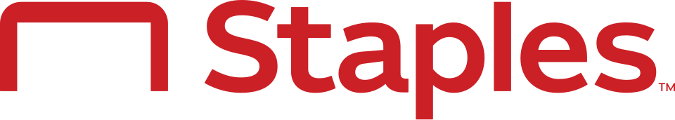
스테이플스Staples미국 · 1986년스테이플스(Staples)는 미국에 본사를 둔 사무용품 전문 소매 기업이다.
 세븐업7up미국 · 1928년
세븐업7up미국 · 1928년세븐업은 미국에서 탄생한 레몬라임 향 무카페인 탄산음료로, 맑고 투명한 액체와 청량한 산미가 특징이다.
 퍼플렉시티 AIPerplexity미국
퍼플렉시티 AIPerplexity미국퍼플렉시티 AI는 미국 샌프란시스코에 본사를 둔 AI 기반 대화형 검색 서비스로, 질문에 직접 답하면서 그 근거가 된 출처를 함께 인용하는…
 바비브라운BOBBI BROWN미국 · 1991년
바비브라운BOBBI BROWN미국 · 1991년바비브라운(Bobbi Brown)은 자연스러운 아름다움을 강조하는 미국의 메이크업 브랜드이다.
 베네피트benefit미국 · 1976년
베네피트benefit미국 · 1976년베네핏 코스메틱스(Benefit Cosmetics)는 1976년 쌍둥이 자매 진·제인 포드가 미국 샌프란시스코에서 창업한 화장품 브랜드로,…
 베드 베스 앤드 비욘드Bed Bath & Beyond미국 · 1997년
베드 베스 앤드 비욘드Bed Bath & Beyond미국 · 1997년베드 배스 앤드 비욘드(Bed Bath & Beyond)는 침구·욕실·주방 등 가정용품을 판매했던 미국의 홈굿즈 소매 체인이다.
 프레임워크Framework미국 · 2019년
프레임워크Framework미국 · 2019년프레임워크는 2019년 미국에서 설립된 모듈형 노트북 제조 기업으로, 사용자가 직접 부품을 교체하고 업그레이드할 수 있는 수리 가능한 컴퓨터를…
 앱러빈AppLovin미국 · 2012년
앱러빈AppLovin미국 · 2012년앱러빈(AppLovin)은 개발자의 모바일 앱 마케팅·수익화·분석·배포를 지원하는 광고 및 소프트웨어 플랫폼을 운영하는 미국 모바일 기술…
 코스트코Costco미국 · 1983년
코스트코Costco미국 · 1983년코스트코(Costco)는 연회비 회원제로 운영되는 미국의 다국적 창고형 대형 할인 유통업체이다.
 레이먼드 제임스Raymond James Financial미국 · 1962년
레이먼드 제임스Raymond James Financial미국 · 1962년레이먼드 제임스(Raymond James Financial)는 미국의 투자은행이자 증권회사로, 글로벌 투자은행업·증권업·투자경영과 인수합병…
전체 목록
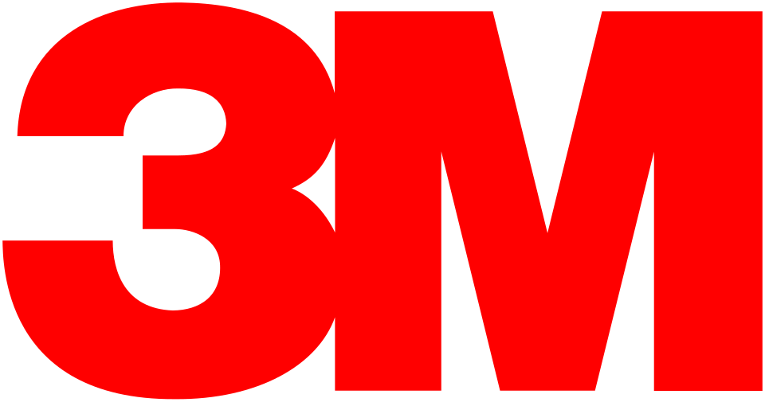
3M3M(3M)은 미국의 다국적 기업으로, 전자·정보기술, 그래픽 관계 용역·제품, 산업·소비재, 생명과학 분야의 사업을 운영한다.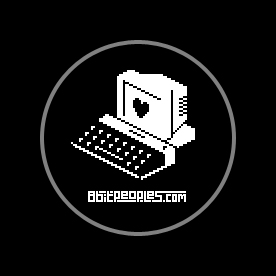
8bitpeoples8bitpeoples는 1999년 미국 뉴욕에서 결성된 칩튠(8비트) 음악 레이블이자 아트 컬렉티브다.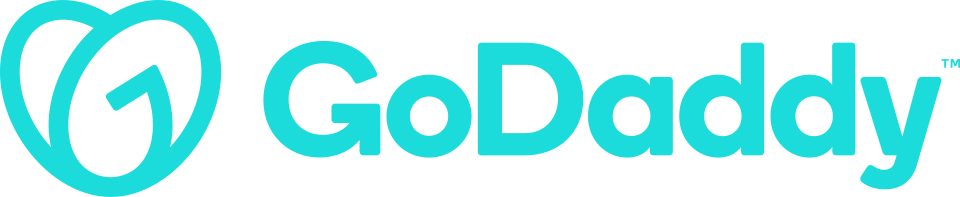
고대디 GoDaddy고대디(GoDaddy)는 인터넷 도메인 레지스트리, 도메인 등록대행, 웹 호스팅을 운영하는 미국의 상장 기업이다.골드만삭스 Goldman Sachs골드만삭스(Goldman Sachs)는 기관투자자를 주요 고객으로 삼는 미국계 다국적 투자은행이다.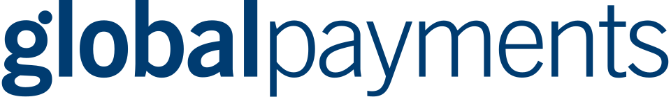
글로벌페이먼츠 Global Payments글로벌페이먼츠(Global Payments)는 가맹점, 카드 발급사, 소비자에게 결제 기술을 제공하는 미국의 다국적 금융기술 기업이다.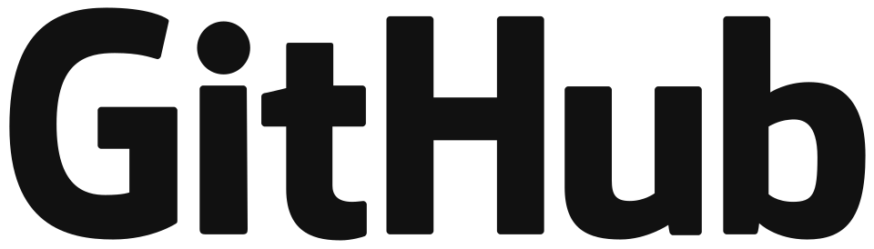
깃허브 GitHub깃허브(GitHub)는 개발자가 코드를 생성·저장·관리·공유할 수 있는 미국의 사유 소프트웨어 개발자 플랫폼이다.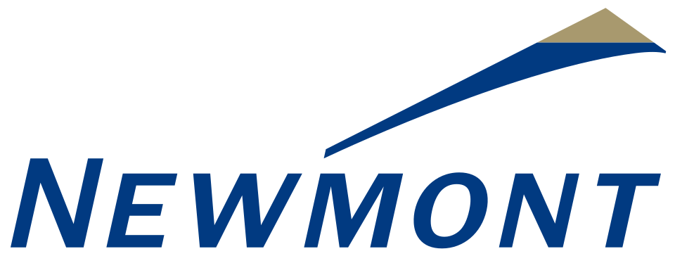
뉴몬트 Newmont Mining Corporation뉴몬트(Newmont Mining Corporation)는 미국에 기반을 두고 여러 국가에서 금광을 소유·운영하는 광업 회사이다.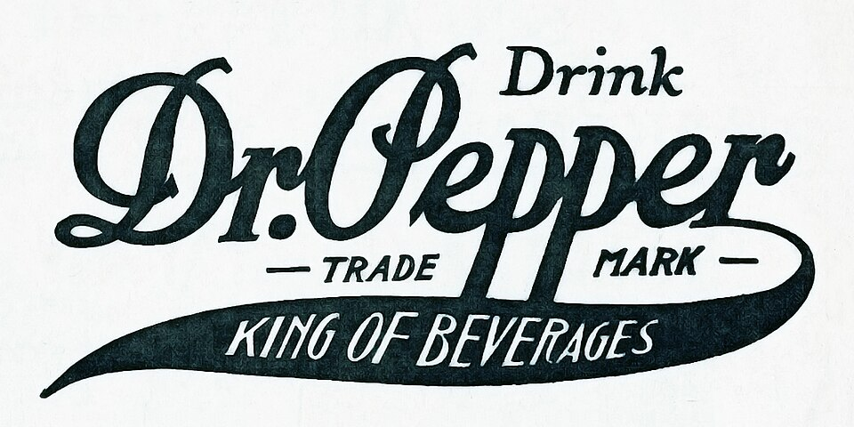
닥터페퍼 Dr Pepper닥터페퍼(Dr Pepper)는 미국 큐릭닥터페퍼가 생산하는 탄산음료로, 23가지 맛과 향을 조합한 독특한 풍미를 바탕으로 여러 지역에서 판매하는 브랜드이다.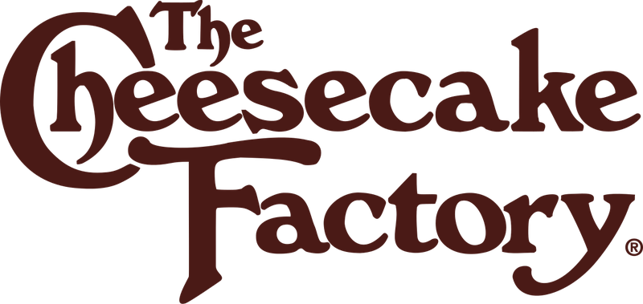
더 치즈케이크 팩토리 The Cheesecake Factory더 치즈케이크 팩토리(The Cheesecake Factory)는 1978년 미국 캘리포니아주 베벌리힐스에서 데이비드 M.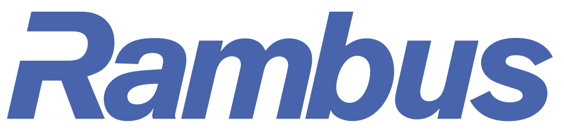
램버스 Rambus램버스(Rambus)는 디지털 회로 제품에 쓰이는 칩 인터페이스 기술과 구조를 설계·개발하고 라이선스를 부여하는 미국의 기술 기업이다.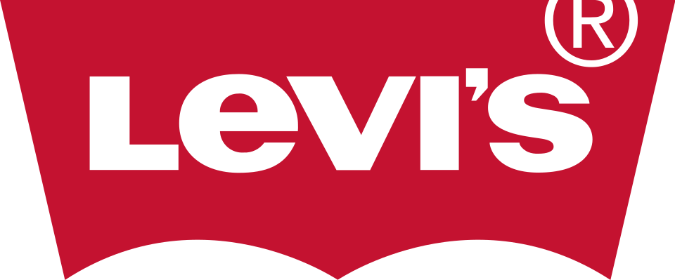
리바이 스트라우스 앤드 컴퍼니 Levi Strauss & Co.리바이 스트라우스 앤드 컴퍼니(Levi Strauss & Co.)는 데님 청바지로 대표되는 미국의 의류 기업이다.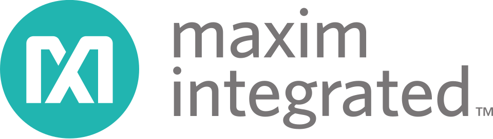
맥심 인터그레이티드 Maxim Integrated맥심 인터그레이티드(Maxim Integrated)는 미국의 반도체 회사로, 아날로그 및 혼합신호 집적회로를 설계·제조·판매했다.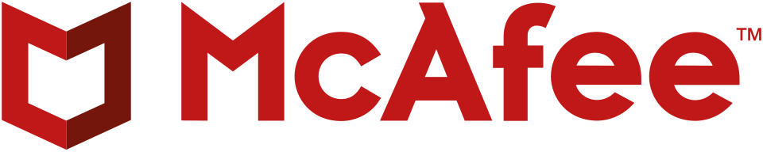
맥아피 McAfee, LLC맥아피(McAfee, LLC)는 미국 캘리포니아주 샌타클래라에 본사를 두고 컴퓨터 보안 관련 소프트웨어와 하드웨어를 제작·판매하는 회사이다.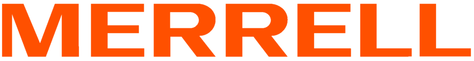
머렐 Merrell머렐(Merrell)은 1981년 미국에서 설립된 신발 제조 브랜드이다.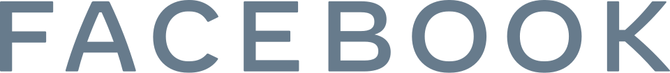
메타 플랫폼스 Meta Platforms메타 플랫폼스(Meta Platforms)는 멘로파크에 본사를 둔 미국의 다국적 기술 기업이다.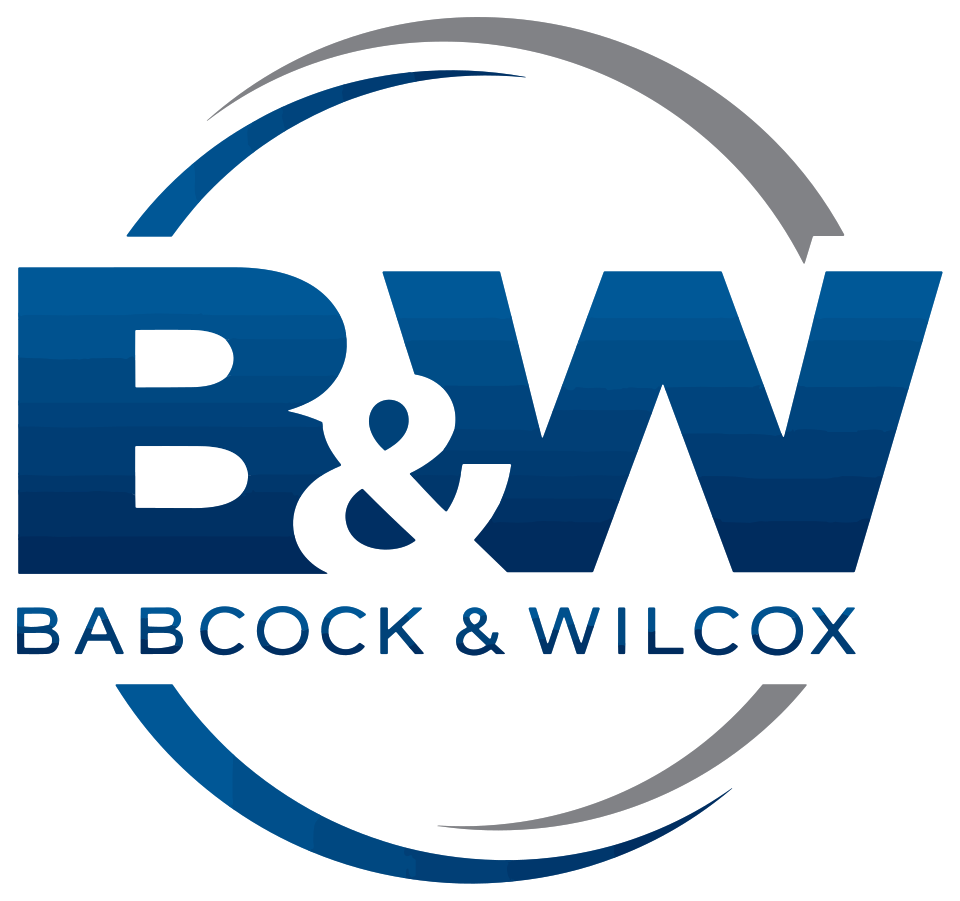
밥콕 앤 윌콕스 Babcock & Wilcox밥콕 앤 윌콕스(Babcock & Wilcox)는 미국의 발전, 에너지 기술 및 서비스 제공 기업이다.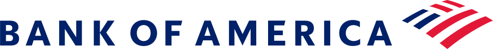
뱅크 오브 아메리카 Bank of America뱅크 오브 아메리카(Bank of America)는 미국의 민영 상업은행이자 금융지주회사이다.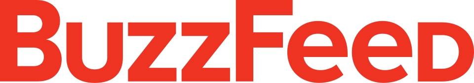
버즈피드 BuzzFeed버즈피드(BuzzFeed)는 미국 뉴욕에 본사를 둔 뉴스 및 엔터테인먼트 웹사이트이다.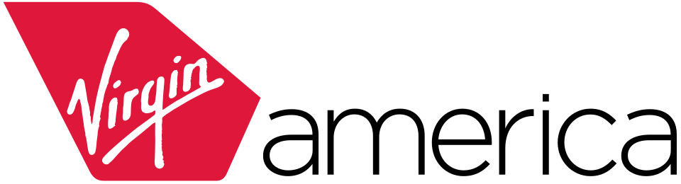
버진 아메리카 Virgin America버진 아메리카(Virgin America)는 버진 그룹을 모회사로 2007년 8월 영업을 시작한 미국의 저비용 항공사이다.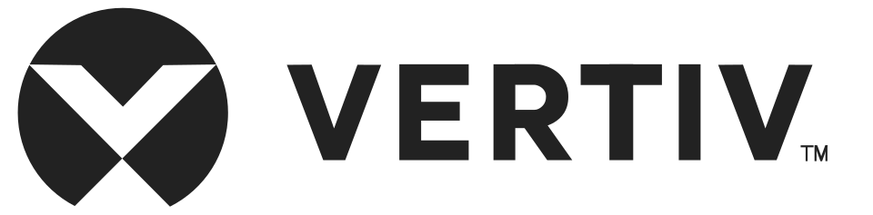
버티브 Vertiv버티브(Vertiv)는 데이터 센터, 통신 네트워크, 상업·산업 환경에 전력 관리와 열 관리, 통합 랙, 모니터링 및 관련 서비스를 제공하는 미국의 디지털…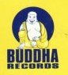
부다 레코드 Buddah Records부다 레코드(Buddah Records)는 1967년 미국 뉴욕에서 설립된 음반 레이블이다.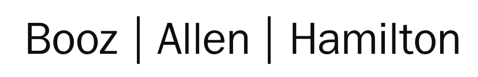
부즈 앨런 해밀턴 Booz Allen Hamilton부즈 앨런 해밀턴(Booz Allen Hamilton)은 정보, 기술, 사이버보안 분야를 전문으로 하는 미국의 정부 및 군 계약업체이다.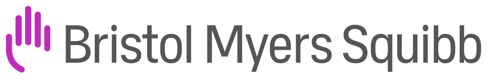
브리스톨 마이어스 스퀴브 Bristol-Myers Squibb브리스톨 마이어스 스퀴브(Bristol-Myers Squibb)는 미국의 다국적 제약회사이다.블랙 탑 레코드 Black Top Records블랙 탑 레코드는 미국의 미디어·엔터테인먼트 브랜드로, 콘텐츠 포맷, 팬덤, 채널 운영, 지식재산권 확장이 함께 작동하는 영역입니다.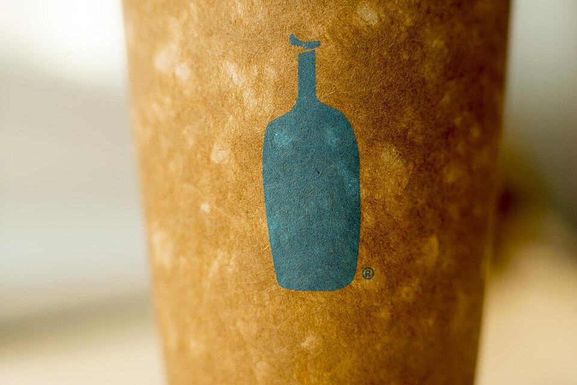
블루보틀 커피 Blue Bottle Coffee Company블루보틀 커피(Blue Bottle Coffee Company)는 미국 캘리포니아주 오클랜드에 본사를 둔 커피 로스터 및 소매 업체이다.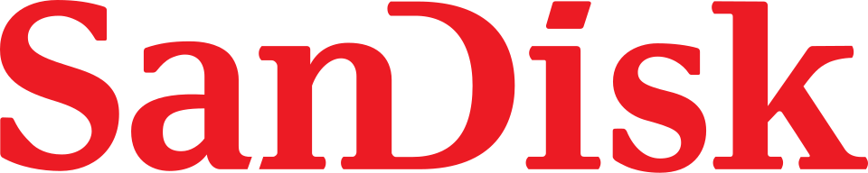
샌디스크 Sandisk샌디스크(Sandisk)는 메모리 카드, USB 플래시 드라이브, 솔리드 스테이트 드라이브를 설계하고 제조하는 미국의 다국적 컴퓨터 반도체 기업이다.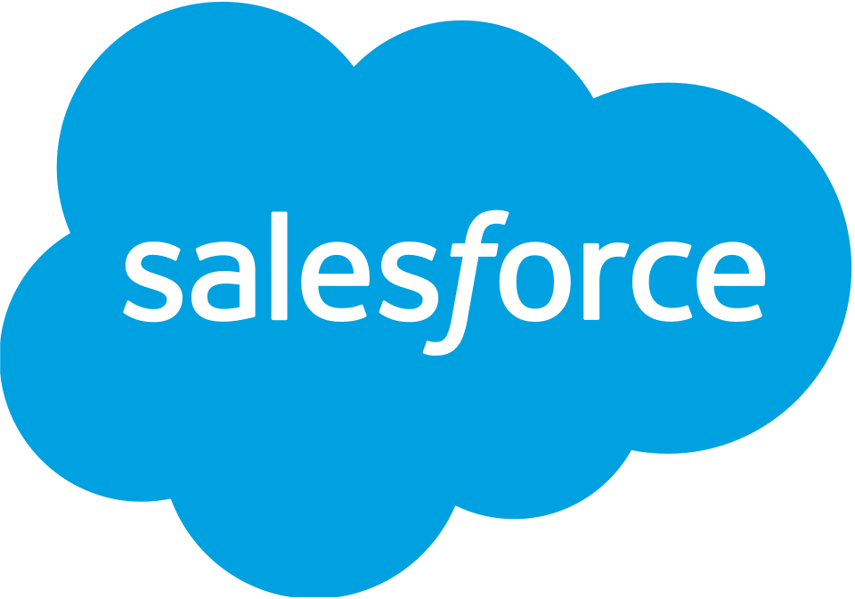
세일즈포스닷컴 Salesforce세일즈포스닷컴(Salesforce)은 고객 관계 관리 솔루션을 중심으로 기업용 클라우드 컴퓨팅 서비스를 제공하는 미국의 소프트웨어 기업이다.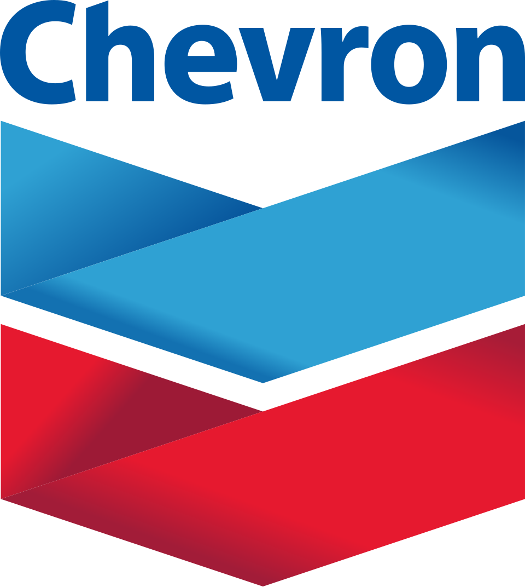
셰브런 Chevron Corporation셰브런(Chevron Corporation)은 석유와 가스를 중심으로 탐사, 생산, 정제, 운송, 판매와 발전 사업을 전개하는 미국의 다국적 에너지 기업이다.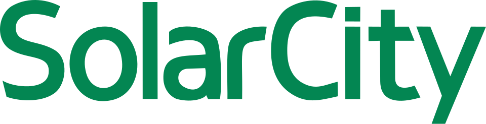
솔라시티 SolarCity솔라시티(SolarCity)는 미국에서 주거·상업·산업 고객에게 태양광 발전 시스템과 관련 제품·서비스를 판매하고 설치한 기업이다.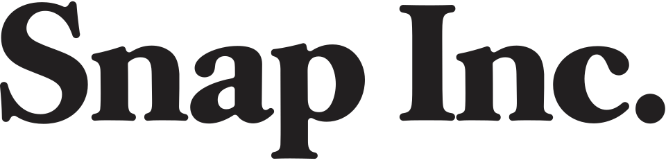
스냅 Snap Inc.스냅(Snap Inc.)은 미국 캘리포니아주 샌타모니카에 본사를 둔 기술 기업이다.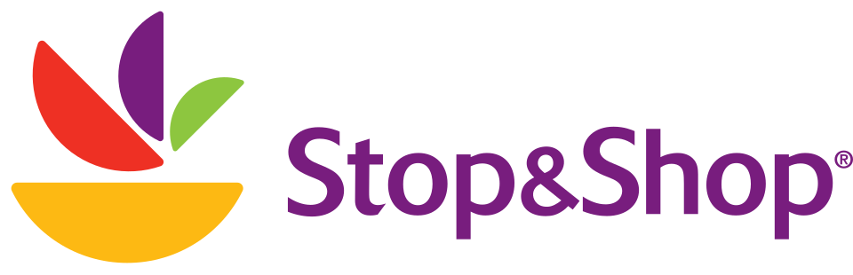
스톱 앤 숍 Stop & Shop스톱 앤 숍(Stop & Shop)은 1914년 미국 매사추세츠에서 시작한 슈퍼마켓 체인이다.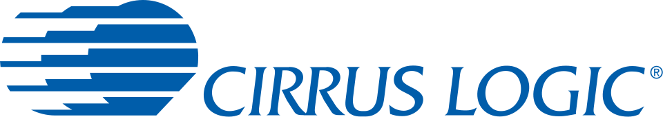
시러스 로직 Cirrus Logic시러스 로직(Cirrus Logic)은 미국의 팹리스 반도체 업체이다.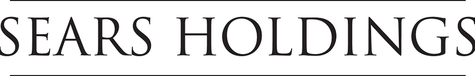
시어스 홀딩스 Sears Holdings Corporation시어스 홀딩스(Sears Holdings Corporation)는 미국 일리노이주 Hoffman Estates에 본사를 둔 지주회사로, 소매 체인 Kmart와…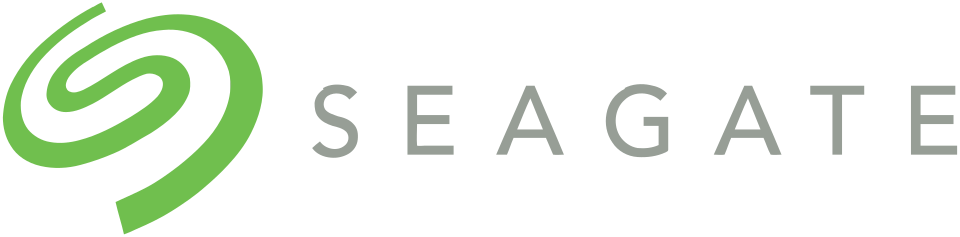
씨게이트 테크놀로지 Seagate Technology씨게이트 테크놀로지(Seagate Technology)는 하드 디스크 드라이브와 솔리드 스테이트 드라이브를 개발·공급하는 미국의 데이터 저장 장치 기업이다.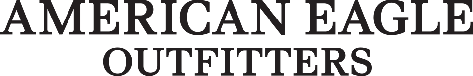
아메리칸 이글 아웃피터스 American Eagle Outfitters아메리칸 이글 아웃피터스(American Eagle Outfitters)는 미국 펜실베이니아주 피츠버그에 본사를 둔 의류·액세서리 소매업체이다.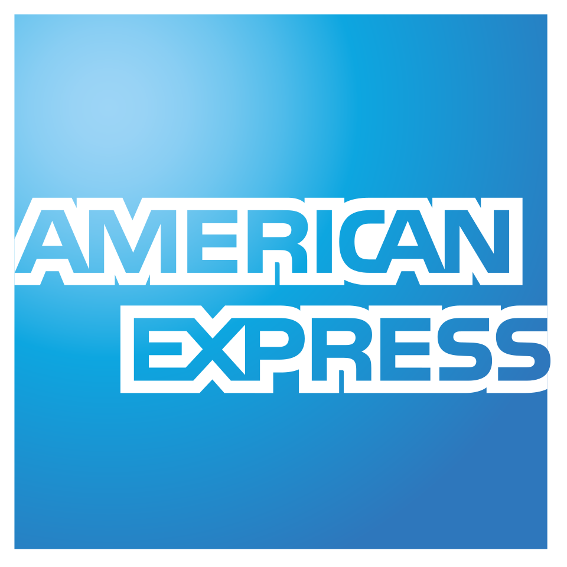
아메리칸 익스프레스 American Express아메리칸 익스프레스(American Express)는 미국 뉴욕에 본사를 둔 다국적 금융 서비스 기업이다.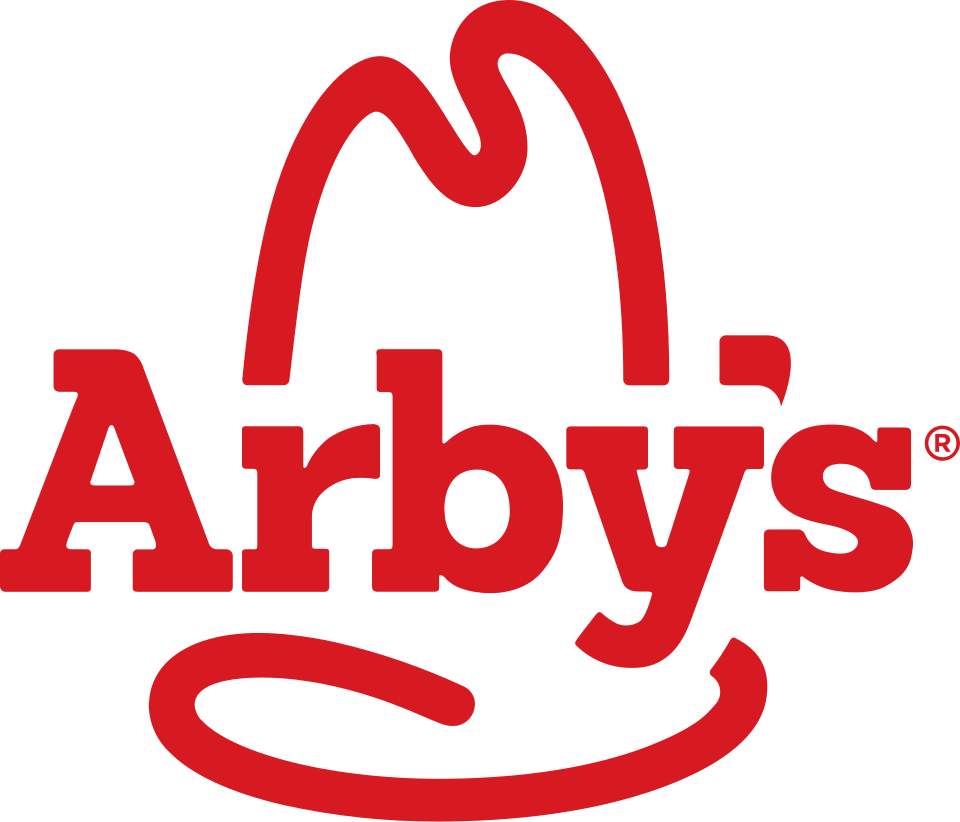
아비스 Arby's아비스(Arby's)는 미국에 본사를 둔 샌드위치 전문 패스트푸드 체인 브랜드이다.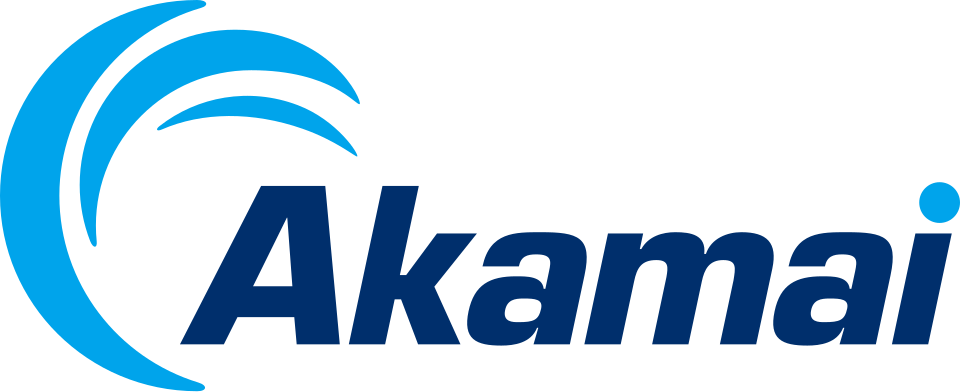
아카마이 테크놀로지스 Akamai Technologies아카마이 테크놀로지스(Akamai Technologies)는 분산 컴퓨팅과 클라우드 컴퓨팅을 바탕으로 웹 가속, 보안, 스트리밍 서비스를 제공하는 미국의 B2B…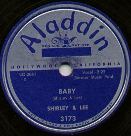
알라딘 레코드 Aladdin Records알라딘 레코드(Aladdin Records)는 1945년 메스너 형제가 미국 로스앤젤레스에서 설립한 R&B·블루스 레이블이다.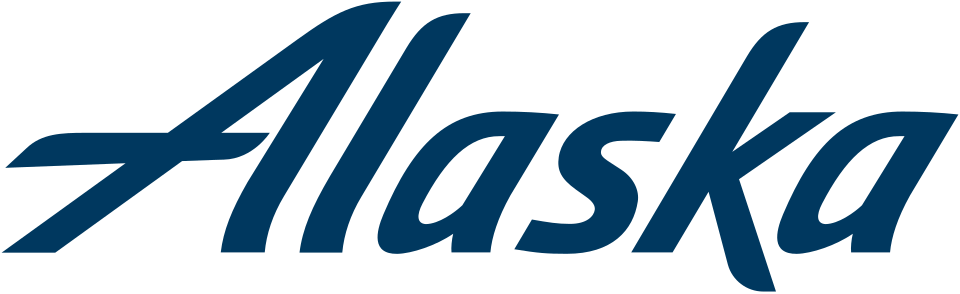
알래스카 항공 Alaska Airlines알래스카 항공(Alaska Airlines)은 시애틀 터코마·포틀랜드·로스앤젤레스·테드 스티븐스 앵커리지 국제공항을 허브로 사용하는 미국 항공사이다.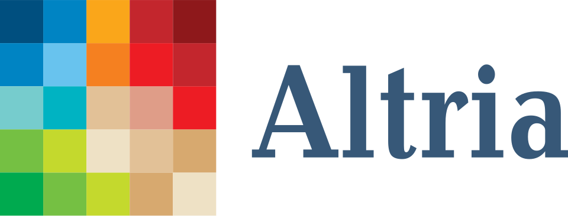
알트리아 Altria알트리아(Altria)는 미국에서 식품 및 담배 산업을 전개하고, 전 세계에서 담배와 관련 제품을 생산·마케팅하며 여러 관련 회사를 거느린 기업이다.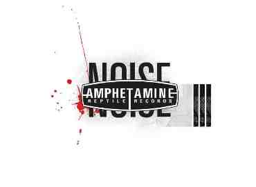
암페타민 렙타일 레코드 Amphetamine Reptile Records암페타민 렙타일 레코드(Amphetamine Reptile Records)는 1986년 톰 헤이즐마이어가 미국에서 설립한 노이즈록 레이블이다.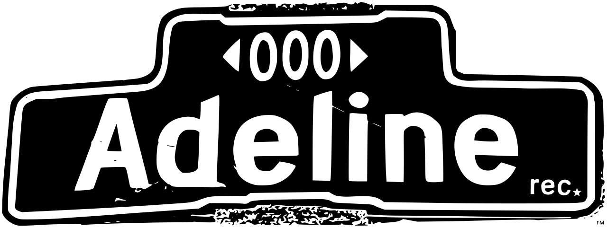
애들린 레코드 Adeline Records애들린 레코드(Adeline Records)는 1997년 미국 캘리포니아 오클랜드에서 설립된 펑크·록 레이블이다.애로우 일렉트로닉스 Arrow Electronics애로우 일렉트로닉스(Arrow Electronics)는 콜로라도 센테니얼에 본사를 둔 미국의 기업이다.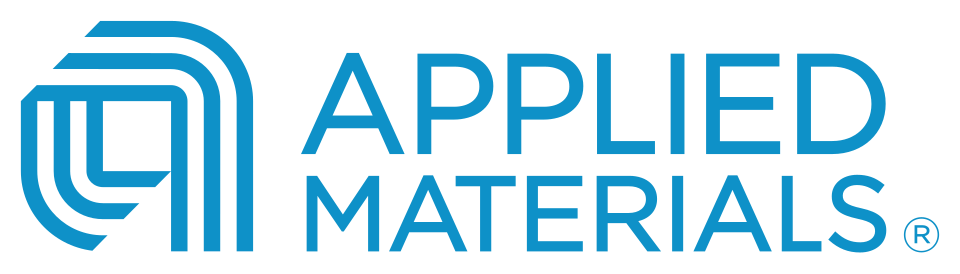
어플라이드 머티어리얼즈 Applied Materials어플라이드 머티어리얼즈(Applied Materials)는 반도체 제조 장비와 관련 서비스, 소프트웨어를 전문으로 하는 미국 회사이다.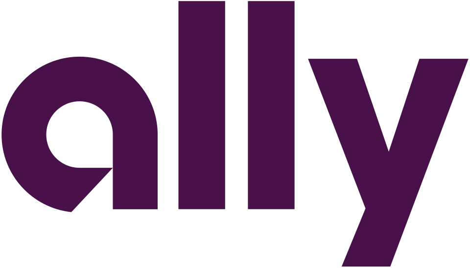
얼라이 파이낸셜 Ally Financial얼라이 파이낸셜(Ally Financial)은 미국 디트로이트에 본사를 둔 은행 지주회사이다.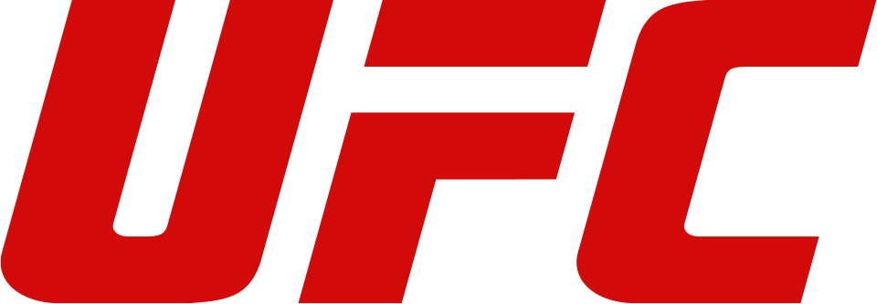
얼티밋 파이팅 챔피언십 Ultimate Fighting Championship얼티밋 파이팅 챔피언십(Ultimate Fighting Championship)은 미국을 기반으로 여러 무술의 기술을 결합한 경기를 운영하는 종합격투기 단체이다.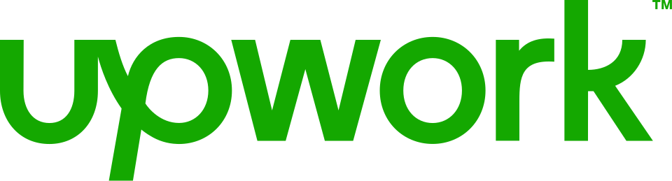
업워크 Upwork업워크(Upwork)는 기업과 프리랜서 전문가가 온라인에서 소통하고 원격으로 협력하도록 연결하는 글로벌 프리랜서 플랫폼이다.에너자이저 Energizer Holdings, Inc.에너자이저(Energizer Holdings, Inc.)는 미국 미주리주 클레이턴에 본사를 둔 전지 제조 기업이다.